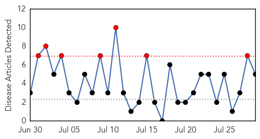

30 Day Trends
Web: 7 alerts, 0 warnings
Twitter: 0 alerts, 0 warnings
Top Articles:
- 0.998
- West Nile returns to NJ, along with concern about new mosquito-borne illness
- 0.994
- West Nile virus detected in mosquitoes in Fort Collins, Larimer County
- 0.949
- Mosquitoes Test Positive for West Nile in Boston
- 0.872
- City to spray pesticide in Queens to combat West Nile virus
- 0.803
- Mosquitoes carrying West Nile found in SE Fort Collins
Top Tweets:
-
No tweets found for Jul 29, 2014
Web/News Articles
Tweets

Article Locations